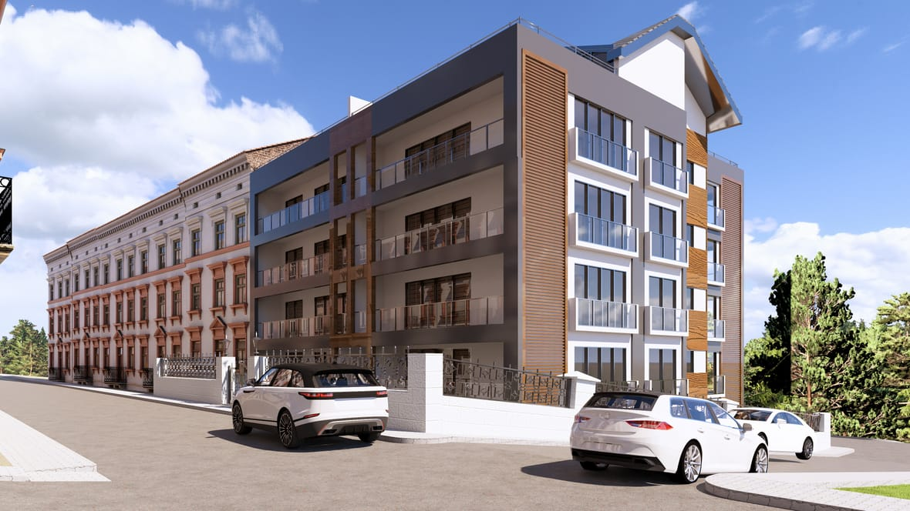
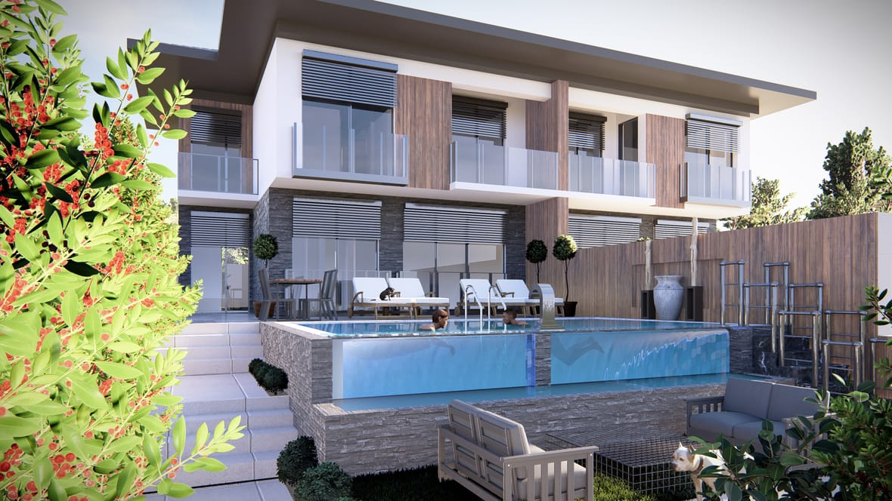
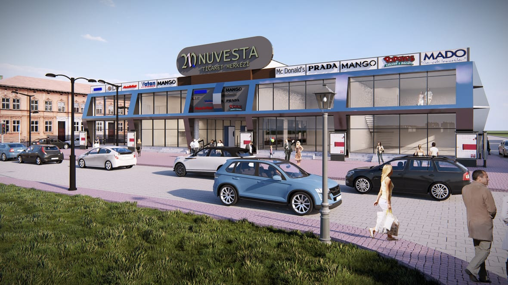

Mantolama tek başına bir kaplama işi değildir; binanın yüksekliği, mevcut cephe durumu ve kullanım amacına göre sistem seçilir. Biz işin iki tarafını birlikte yürütüyoruz: yalıtımın teknik kısmını ve cephenin nasıl görüneceğini. Mimarlık kökenli çalıştığımız için cephe tasarımını da biz yapar, uygulamadan önce üç boyutlu olarak sunarız.
Mantolama kararı çoğu zaman "ısı kaçağı" diye başlar, ama bina bir daha on beş yıl o cepheyle yaşar. Renk, doku ve kaplama kararlarını uygulamadan sonra değiştirmek mümkün değildir. Bu yüzden cephe tasarımını önce çizer, görselleştirir ve sunarız.



Tek doğru malzeme yoktur; doğru olan binaya uyandır. Sistem, yapının yüksekliğine, cephe durumuna ve bütçeye göre seçilir.
Konutlarda en yaygın kullanılan sistem. Hafiftir, uygulaması hızlıdır ve maliyet avantajı sağlar. Karbon katkılı (grafitli) türü aynı kalınlıkta daha yüksek yalıtım değeri verir.
Uygun olduğu yer: Az ve orta katlı konut binaları, müstakil evler, villa cepheleri.
Yanmaz sınıfta bir malzemedir; yangın güvenliği öne çıktığında ve yönetmelik gereği yüksek yapı sınıfına giren binalarda kullanılır. Ayrıca ses yalıtımı EPS'e göre belirgin şekilde iyidir.
Uygun olduğu yer: Yüksek katlı binalar, cadde üzerindeki gürültülü konumlar, yangın gerekliliği olan yapılar.
Suya ve basınca dayanıklıdır. Cephenin tamamında değil, suyla temas eden ve yük alan bölgelerde kullanılır.
Uygun olduğu yer: Bina eteği (subasman), bodrum duvarları, teras ve balkon zeminleri.
Kalınlık marka değil hesap işidir: bölgenin iklim kuşağı, duvar yapısı ve hedeflenen tasarruf birlikte değerlendirilir. Gereğinden ince yalıtım parayı boşa harcar, gereğinden kalın olan da kendini amorti etmez.
Karar: Keşifte binanın duvar kesiti ve konumu görülerek belirlenir.
Isı kaybının tamamı duvardan olmaz. Cepheyi yalıtıp çatıyı ya da terası atlamak, sonucu ciddi şekilde düşürür.
Mantolamada m² fiyatı en çok yanıltan rakamdır; aynı sayı, çok farklı işleri anlatabilir. Farkı yaratan kalemler:
Mantolama ne kadar sürede kendini amorti eder?
EPS mi taş yünü mü kullanmalıyım?
Apartmanda mantolama kararı nasıl alınır?
Kışın mantolama yapılabilir mi?
Cephe tasarımı ayrı bir ücret mi?
Çelik ev, kat karşılığı, havuz ya da mimari proje — adınızı ve telefonunuzu bırakın, size uygun çözümü konuşalım.